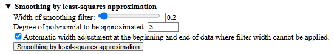
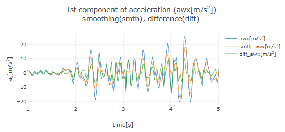
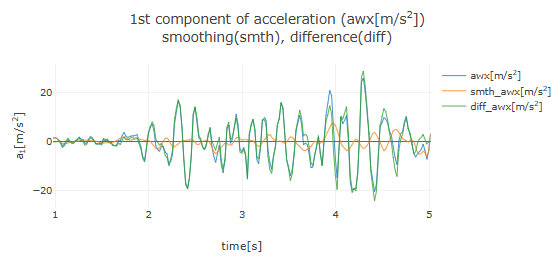
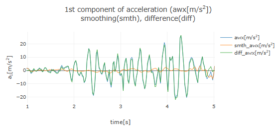
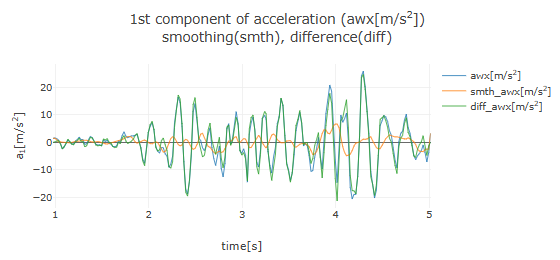

[ Operation Guide ]
■ Data Smoothing by Least Squares Approximation
This application offers two methods for data smoothing (noise removal): one using Fourier Transform and another based on Least Squares Approximation.
Here, as an example, we will explain how to smooth data using least squares approximation 1) , assuming acceleration data as shown below has been obtained.
In smoothing by least squares approximation, data within the smoothing filter window is fitted using a polynomial function through the least squares method. The function value at the center of the filter width is taken as the smoothed data value for that point. The filter window is shifted from the left end of the data to the right end, performing similar fitting at each step to obtain the smoothed data. If the time interval of the measurement data is always constant, this method is equivalent to Savitzky-Golay smoothing 2) .

After loading the acceleration data and setting the time domain for analysis, a graph of the acceleration data will be displayed, along with an area labeled "Smoothing of acceleration data" below it. Clicking on the "▶ Smoothing by least squares approximation" row will display the configuration options for least squares approximation. Set the filter width using the slider or by entering a value, and specify the order of the polynomial for the approximation. Since the filter width cannot be applied to the edges of the data, check the option for automatic adjustment (if unchecked, the edges will deviate from the original data). After configuration, click the "Smoothing by least squares approximation" button to overlay the smoothed acceleration graph on the original acceleration graph, as shown below (with filter width set to 0.2 and polynomial order to 3).

Here, the orange line (smth_awx) represents the smoothed data, while the green line (diff_awx) shows the difference data (original data minus smoothed data). Observing the graph of the smoothed data (orange line), it is evident that fine oscillations (noise) have been removed from the original data.
The graphs below show results for the same polynomial order of 3, but with filter widths increased to 0.5 and 1.0, respectively. It becomes apparent that a lower-order polynomial cannot approximate data with rapid changes when the filter width is too large.

Smoothing with filter width 1.0 and polynomial order 3

The graph below shows results for a filter width of 0.2 and a polynomial order of 0. A polynomial of order 0 is equivalent to a constant, where the constant value is the average of the data within the filter window.

After smoothing the acceleration data, the "Selection of acceleration data for numerical integration" section will appear, allowing you to choose from "Original data", "Smoothed data", or "Difference data" for numerical integration to calculate velocity. Additionally, clicking the "Clear Smoothing" button will remove the smoothed data and difference data graphs.
The same smoothing by least squares approximation can also be applied to velocity and position data.
[ References ]
- Peter A. Gorry, General Least-Squares Smoothing and Differentiation of Nonuniformly Spaced Data by the Convolution Method, Analytical Chemistry 63, 534-536 (1991).
- Abraham. Savitzky and M. J. E. Golay, Smoothing And differentiation of Data by Simplified Least Squares Procedures, Analytical Chemistry 36, 1627-1639 (1964).